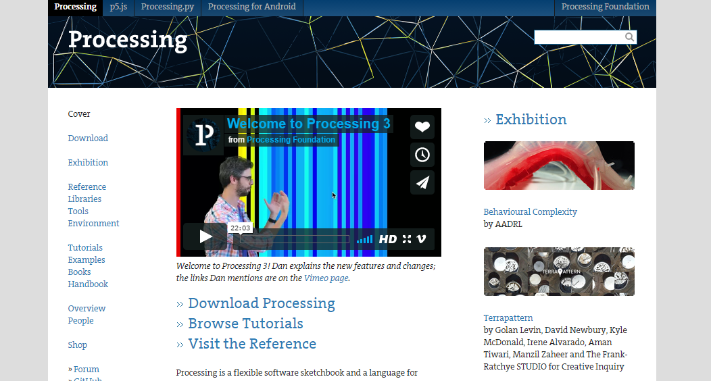
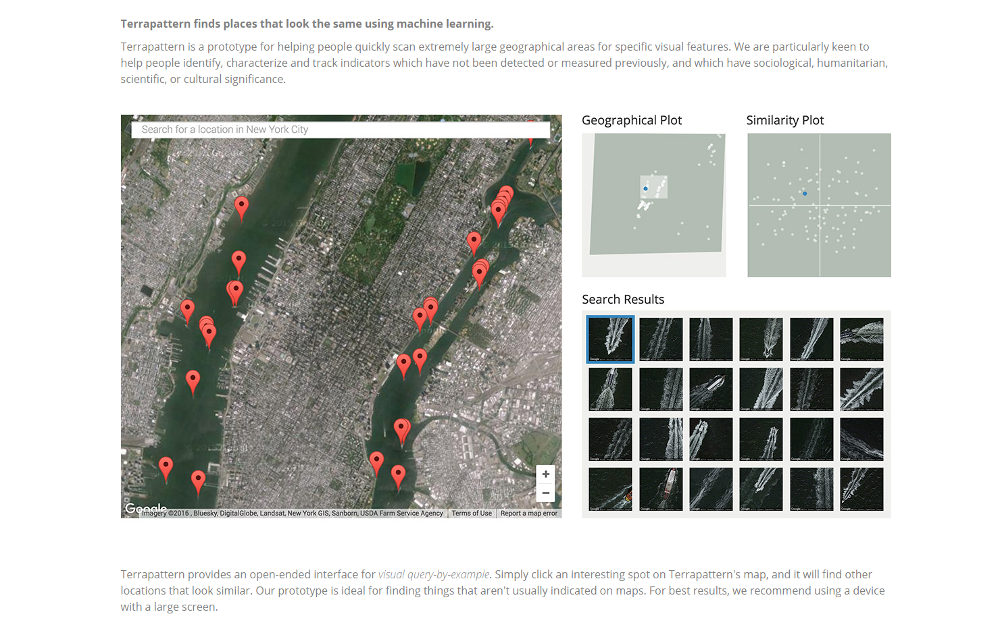
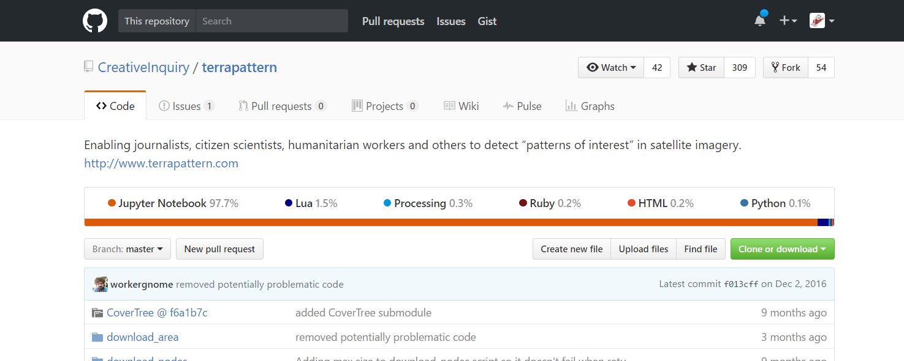

class: center # Jak rysować jak nie umiem? <div class="flexbox"> <section id="info"> <h3>Info</h3> <p>Piotr Pietrzak</p> <p>hello@haspar.us</p> </section> <section id="contents"> <h3>Spis treści</h3> <ol> <li>Dlaczego tu stoję?</li> <li>Processing</li> <li>p5.js</li> <li>Coś mądrego, coś ładnego <ol> <li>Terrapatern?</li> <li>Fluid Leaves</li> <li>Random Access Memory</li> <li>Bees and Bombs</li> </ol> </li> <li>Coś mojego <ol> <li>Special snowflake generator</li> </ol> </li> </ol> </section> </div> --- class: center # Terrapatern  ??? Zaczniemy od czegoś mądrego, ale trochę słabo... Na processing.org podlinkowany jest taki śmieszny projekt, który nazywa się Terrapatern. Terrapatern patrzy sobie w google mapy, analizuje to co widzi i pokazuje Ci zdjęcia podobne do wybranego przez Ciebie obszaru. --- class: center # Terrapatern  ??? Coś mi tu nie pasowało. --- class: center # Terrapatern?????????????????????? ??? Processing miało służyc do rysowania... a oni piszą, że to tresowali i rozpoznaje zdjęcia. To musi być jakaś sieć neuronowa... takie rzeczy się w tym pisze? --- class: center # Terrapatern. ;(  ??? Ach... no dobra `[pokazujesz obrazek z githuba]`. Trzy dziesiąte procenta... to rozwiewa moje wątpliwości. Lećmy dalej. Poszukajmy, może na kolejnych slajdach wstawiłem coś fajnego, co naprawdę było zrobione w Processing. --- class: center # Fluid Leaves <scopeFML> <button class="kill-below-button">Kill the frame!</button> <iframe src="img/Xzibit_Iframe.jpg" data-src="offline_web/Fluid Leaves/reinoudvanlaar.nl/project/leavespattern/index.html" class="lazyload"> <p>Your browser does not support iframes.</p> </iframe> </scopeFML> --- class: center # Random Access Sand Grains <scopeFML> <button class="kill-below-button">Kill the frame!</button> <iframe src="img/Xzibit_Iframe.jpg" data-src="offline_web/Fluid Leaves/www.creativeapplications.net/processing/random-access-memory-materialising-mathematical-process-algorithm/index.html" class="lazyload"> <p>Your browser does not support iframes.</p> </iframe> </scopeFML> --- class: center # Bees and Bombs <div class="flexbox gallery"> <img src="img/bees_and_bombs/bombs (1).gif" alt=""> <img src="img/bees_and_bombs/bombs (2).gif" alt=""> <img src="img/bees_and_bombs/bombs (3).gif" alt=""> <img src="img/bees_and_bombs/bombs (4).gif" alt=""> <img src="img/bees_and_bombs/bombs (5).gif" alt=""> <img src="img/bees_and_bombs/bombs (6).gif" alt=""> <img src="img/bees_and_bombs/bombs (7).gif" alt=""> <img src="img/bees_and_bombs/bombs (8).gif" alt=""> <img src="img/bees_and_bombs/bombs (9).gif" alt=""> <img src="img/bees_and_bombs/bombs (10).gif" alt=""> </div> <a href="https://beesandbombs.tumblr.com/" style="margin-top: 4em; padding: 0 .5em" class="bg-bounce">beesandbombs.tumblr.com</a> ??? Facet uczy fizyki w college'u w Dublinie. --- class: center #